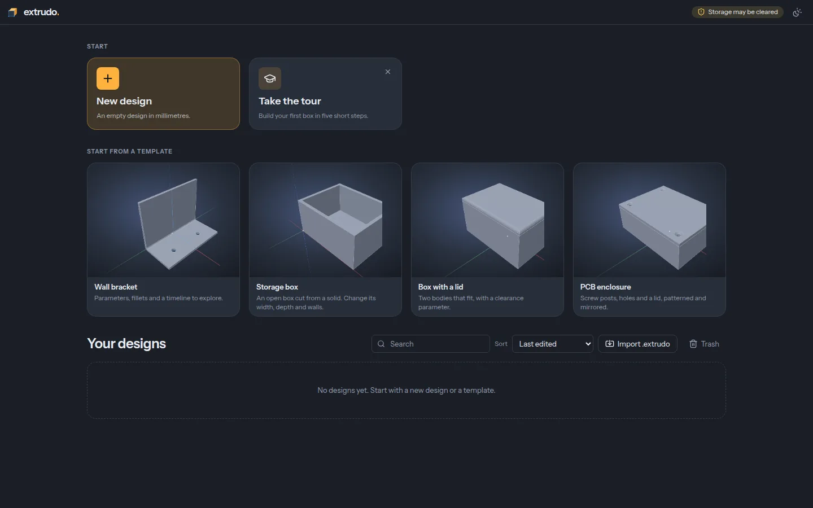

Parametric CAD for 3D printing, in your browser.
Sketch a profile, pull it into a solid, round the edges, and change one number to watch the whole part follow. Free and open source. Nothing to install, no account.
Want the newest features before they're released? Try the latest build. It changes daily and can break.
What it does
-
Sketch with constraints
Lines, arcs, circles, slots and splines snap into place with automatic constraints and driving dimensions. A sketch shows how much freedom is left, and says plainly when something contradicts.
-
Real solids
Extrude, revolve, fillet, chamfer, shell, holes and patterns on exact geometry: real circles and fillets, not a mesh of triangles. What you design is what comes out of the printer.
-
Parameters everywhere
Every number takes an expression with units, like
wall * 1.5 + 2 mm. The design is a timeline you can roll back, reorder and edit, and it rebuilds as you go. -
Made for printing
Lay a face flat on the bed, see overhangs, get the weight and filament length, and export 3MF, STL or STEP. Templates for brackets, boxes, lids and enclosures get you started.
-
Yours, offline too
Designs stay on your own machine. It works offline once it has loaded, and you can install it from the browser's menu like an app.
-
Free and open source
GPL-3.0, built in the open. The
.extrudofile format is documented and MIT-licensed, so other tools can read your designs.
Start from a template, or take the tour
A five-step tour walks you through your first part: a sketch, a dimension, an extrude and a fillet. Or open one of the templates and change its parameters.
